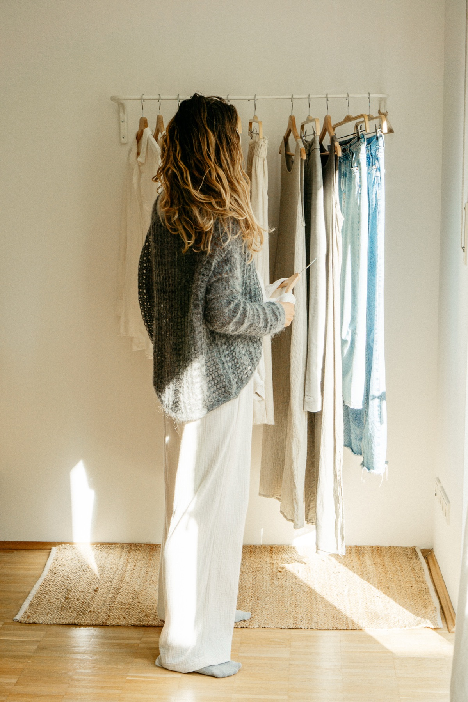
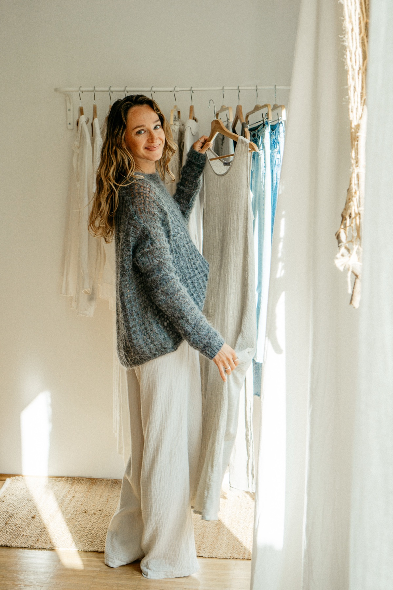
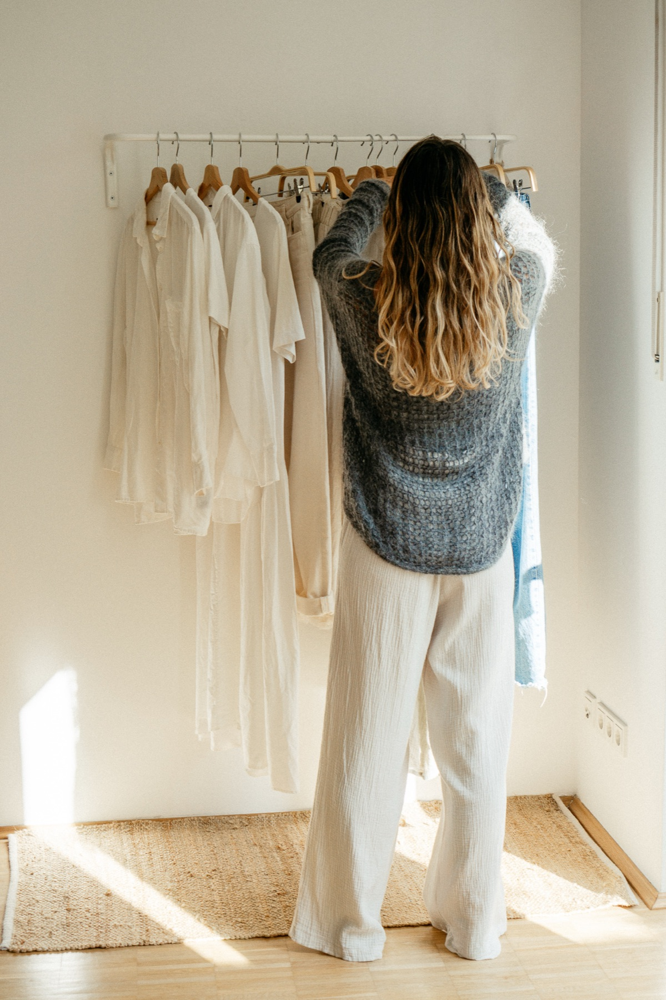

„Am wenigsten braucht die,
die aufgehört hat zu sein, wer sie nicht ist."
— aus „Erfüllter leben mit Minimalismus" von Adina Markowz
Das 7-Wochen Online-ProgrammCapsule Wardrobe trifft auf liebevolle Selbsterkenntnis und Persönlichkeitsentwicklung.
In diesem Kurs bauen wir gemeinsam in 7 Wochen deine individuelle Miracle Wardrobe auf – von der Socke bis zum Mantel.
Weniger Teile, mehr anzuziehen.
Für alle, die sich nach ihrer Lieblingsteile-Garderobe sehnen. Und nach mehr Zeit für die wirklich wichtigen Dinge im Leben.
„Trotz vielen Jahren Beschäftigung mit dem Thema Capsule Wardrobe – so bin ich meine Garderobe noch nie angegangen. Mit Struktur, mit einer stabilen Basis in mir selbst, mit einer klaren Vision."
Weil wir nicht viel brauchen, sondern das Richtige.
Unsere Garderobe spiegelt uns so viel mehr als zusammengewürfelte Farben, Schnitte und Stoffe.
Wir sind nicht frustriert über einen Haufen Klamotten, in dem wir trotzdem nie etwas Richtiges zum Anziehen finden.
Wir sind frustriert über das, was uns darin begegnet:
Du merkst: In unserem Kleiderschrank hängt so viel mehr als Stoff und Staub.
Genau das macht unseren Kleiderschrank zur Goldgrube für Persönlichkeitsentwicklung.
Wenn wir aufhören, uns für tausend verschiedene Rollen und Eventualitäten zu wappnen, können wir uns endlich eine viel wichtigere Frage beantworten: Wer will ich sein.
Und damit holen wir uns zurück, was wir unterwegs verloren haben: Träume, an die wir aufgehört hatten zu glauben. Selbstbewusstsein, das verschüttet war. Leichtigkeit, die uns irgendwann abhandengekommen ist.

The Miracle Wardrobe ist ein pragmatisches Programm, in dem du mit Struktur und System deine Capsule Wardrobe umsetzt und dich dabei auf eine befreiende Reise hin zu dir selbst begibst.
Eine Erlaubnis, loszulassen. Und deine Energie zu bündeln für das, was dir wirklich wichtig ist.


Acht Dinge, die diesen Kurs anders machen als alles, was du bisher zum Thema Kleiderschrank probiert hast.
Du musst nicht alles auf den Boden kippen und dich durchkämpfen. Wir arbeiten Schritt für Schritt, in deinem Tempo, ohne Schock.
Dein Schrank zeigt dir Muster, Rollen und Sehnsüchte, die du sonst nicht siehst. Wir lesen ihn, ohne ihn zu bewerten.
Du bekommst keine Basic-Checkliste. Du entwickelst dein eigenes Gefühl dafür, was bleiben darf und was gehen kann.
Trends, Farbberatung, Vergleiche verlieren ihren Reiz. Du weißt zum ersten Mal, was wirklich zu dir gehört.
Du ziehst dich an, ohne zu denken. Der Tag fängt in Ruhe an, nicht mit Überforderung.
Die Methode funktioniert nicht nur für deinen Schrank. Du nimmst sie mit ins Leben, in den Kalender, in die Beziehungen.
Lebenslanger Zugang zu allen Modulen. Du gehst durch, wann es für dich passt, und kommst zurück, so oft du willst.
Am Ende steht nicht ein aufgeräumter Schrank. Sondern das Gefühl, zum ersten Mal seit langem bei dir selbst zu Hause zu sein.
Platzhalter. Du kannst jederzeit starten und in deinem Tempo durchgehen. Alle Module sind ab dem Kaufdatum freigeschaltet.
Platzhalter. 6 Module, über 7 Wochen konzipiert. Modul 2 ist über zwei Wochen gestreckt, weil es das umfangreichste ist. Jedes Modul enthält Videos, Übungen und Anleitungen.
Platzhalter. Ungefähr 1-2 Stunden pro Woche reichen, wenn du mitkommen willst. Du kannst aber auch schneller oder langsamer durchgehen.
Platzhalter. Nein. Der Kurs ist explizit kein Ausmist-Marathon und kein Shopping-Programm. Du arbeitest mit dem, was du hast.
Platzhalter. Lebenslang. Einmal gekauft, immer dabei, auch wenn Updates dazukommen.
Platzhalter. Ja, gesetzliches Widerrufsrecht von 14 Tagen ab Kauf, solange du nicht bereits wesentliche Teile des Kurses abgerufen hast.
Ich bin Bestsellerautorin, Minimalismus-Coach und die Frau hinter @minimalismuse mit 115.000 Leserinnen auf Instagram.
Ich habe selbst jahrelang geglaubt, ich sei zu sensibel, zu erschöpft, zu wenig belastbar. Dann habe ich meine Umwelt verändert statt mich selbst. Weniger Zeug, weniger Termine, weniger Reize. Und plötzlich war das „Zuviel" kein Charakterfehler mehr, sondern ein Umgebungsproblem.
Meine Arbeit dreht sich um einen Gedanken: Feinfühlige Frauen sind nicht kaputt. Ihre Umgebung passt nicht zu ihnen. Und der Kleiderschrank ist einer der ehrlichsten Orte, um das zu verändern.
The Miracle Wardrobe ist der Kurs, den ich mir selbst gewünscht hätte, als ich angefangen habe.
Ganz ohne Begründung, ohne Diskussion, ohne Haken. Ich will nicht, dass jemand Geld für etwas ausgibt, das sich falsch anfühlt. Schick mir eine E-Mail innerhalb von 14 Tagen nach Kauf, und ich erstatte den vollen Betrag.
Das ist meine Art, den ersten Schritt mitzugehen. Du musst nicht blind vertrauen. Du darfst es dir anschauen.
Und nebenbei eine Methode mitzunehmen, die dir auch den Rest deines Lebens wieder in deines zurückgibt.
The Miracle Wardrobe starten199 Euro · einmalig · lebenslanger Zugang · 14 Tage Geld-zurück-Garantie